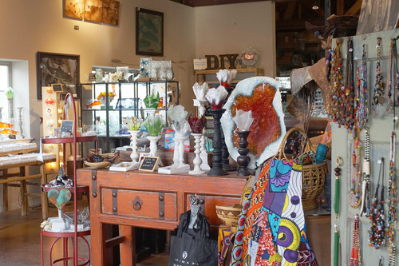
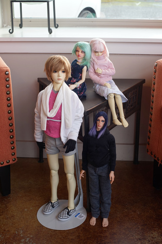
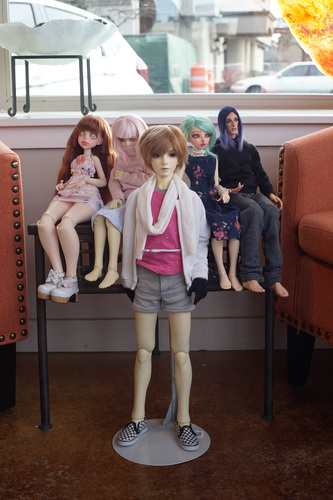
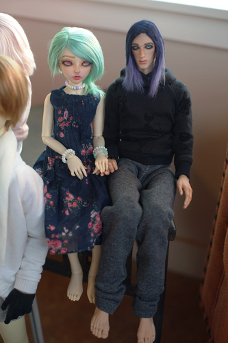
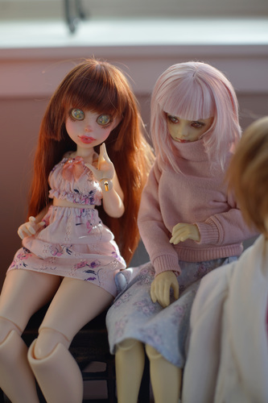
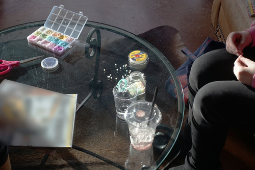
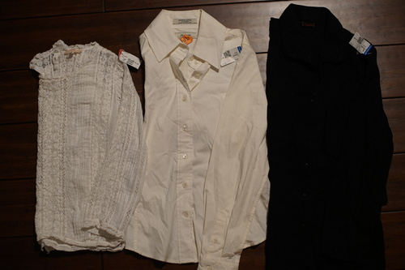
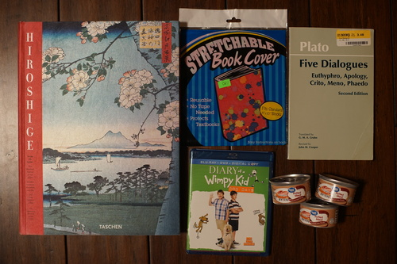

Hello, my tweetlings. It's that time again! Time for another fran hat brand blog post!
I learned about a doll meetup in Seattle last month and really wanted to go! I asked my friends and they agreed, but when last week rolled around and we did the calculations on getting there, it was very clearly not worth it. Bad day and timing meant we left at 6:30AM and did a 2+ hour commute to get there an hour before the meetup started. As much as I wanted to see dolls, not worth it.
But this can't stop us from having our own meetup! My bestie and I drove to a somewhat local Goodwill for a search and destroy and met up with Kohi there. I found some good stuff for once. Kohi found a crap ton of pony beads!!
We went over to the nearby glass cafe and played with dolls for an hour before they closed.
 Liam's got a posse of strangely out of scale people floating behind him.
Don't let me play with your dolls or I'll make weird ships.
We made kandi together~ Kohi kept dropping beads everywhere and here is the proof:
I'm very happy every time I can play dolls with others! I wish we could have made it to the meetup but maybe next time it'll be in a more accessible location.

We stopped by Joann's because the one in town is closing, but everything was like 10-30% off. It's not even worth buying anything at Joanns for less than 40% off.
I have mixed feelings about most of their stores closing. It's really hard to source fabrics without them, but I've been buying fabric almost exclusively at thrift stores for years now. I'm no longer making cosplays so I no longer need anything specific either. I hope Michael's can pick up what Joann's is leaving behind.
I bought clothes?? What?? I never do that anymore!
I was stunned by this cotton lace and pintuck top! It's gorgeous! I had no idea who the designer was or that it sold for that much originally but I'm not surprised because the details are amazing. It buttons up in the back.
Recognized as a good brand. Kinda plain as a white button up is, but very well made. Still had a dry cleaning tag attached.
The black fabric has a lovely texture! It's a very heavy fabric as well.
I used to listen to tracks off this paired to Tokyo night driving videos in 2013. Very happy to have found it!
There were 3, but these two were in better condition and I don't actually have a home yet. They fit SD13 boys at the waist, but the arms are really wide so it's in my best interest to hide their waist while using it.
Whatever manager was on duty allowed the cashier to sell it to me as a kid's book.
I found this one and let my bff buy it because I already bought the purple one I am nice. The little goober narrated our entire trip from the back seat.
From a few days earlier:
This thing is incredibly bad!!! It has super weird dimensions and almost does not stretch at all vertically. It was originally from the Dollar Tree so I'm going to skip all Greenbrier ones now.
Sealed. I love this movie series so much. Watching Greg Heffley get destroyed by his selfish actions is a pleasure every time.
Eat one of these in front of a hungry cat for a good time.